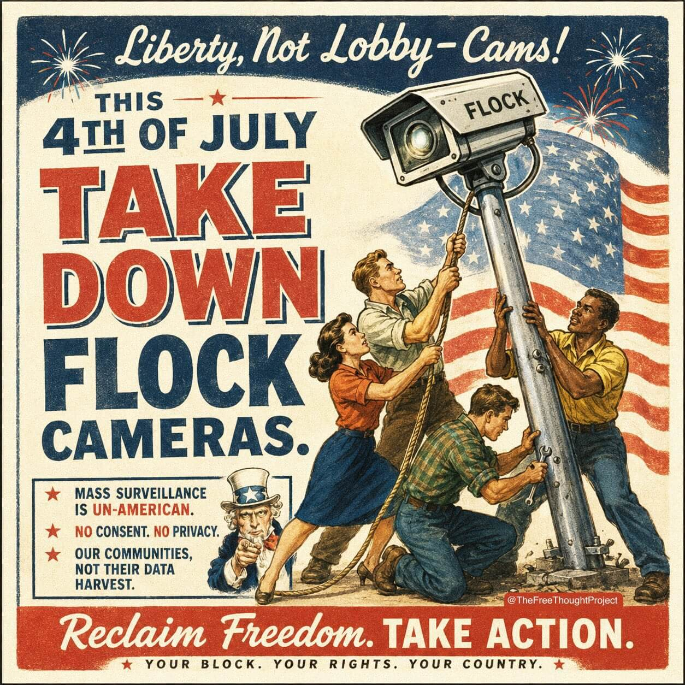

POST_002: NO FREEDOM WITH FLOCK
If you live in an area with even a modest population, you have likely witnessed Flock "Safety" cameras popping up like a plague. The company behind these pervasive devices, Flock Group Inc., publicly claims that its cameras simply capture point-in-time images of license plates on public roadways. Even that innocuous-sounding objective carries serious privacy concerns regarding the establishment of a permanent, timestamped database of citizens' daily movements. But, alas, the full extent of these cameras' functionality is far more threatening. These cameras deploy advanced AI to "fingerprint" the entire environment. This includes cataloging numerous additional identifiers like a vehicle's make and model, body damage, bumper stickers, roof racks, and even the clothing colors of bystanders.
The company's new Condor cameras represent a further push from passive vehicle trackers to active pedestrian dragnets, introducing the ability to automatically acquire, zoom in, and physically track individuals on foot. Even worse, this collected data is accessible by law enforcement with no warrant required, and it feeds directly into the same predictive policing platforms pioneered by companies like Palantir. If all of this wasn't dystopian enough, the company has quietly branched out into also operating mobile surveillance trailers and quadcopter drones. The result is an interconnected web of corporate-owned surveillance that monetizes the routine movements of free citizens and operates without any meaningful oversight. So what is a freedom-loving person to do?
I do not advocate physically cutting down Flock cameras (although there is a growing number of patriots, and even organized groups, doing just that). Instead, I urge you to voice your opposition at city hall meetings and to local representatives. Join (or start) a CCOPS effort in your city or town. Contribute to the DeFlock project, which seeks to map the presence of automated license plate readers like Flock cameras. Remember, there is nothing more American than dismantling systems that seek to subjugate us! ◅(´⌯◡⌯`)ゞ

<< RETURN